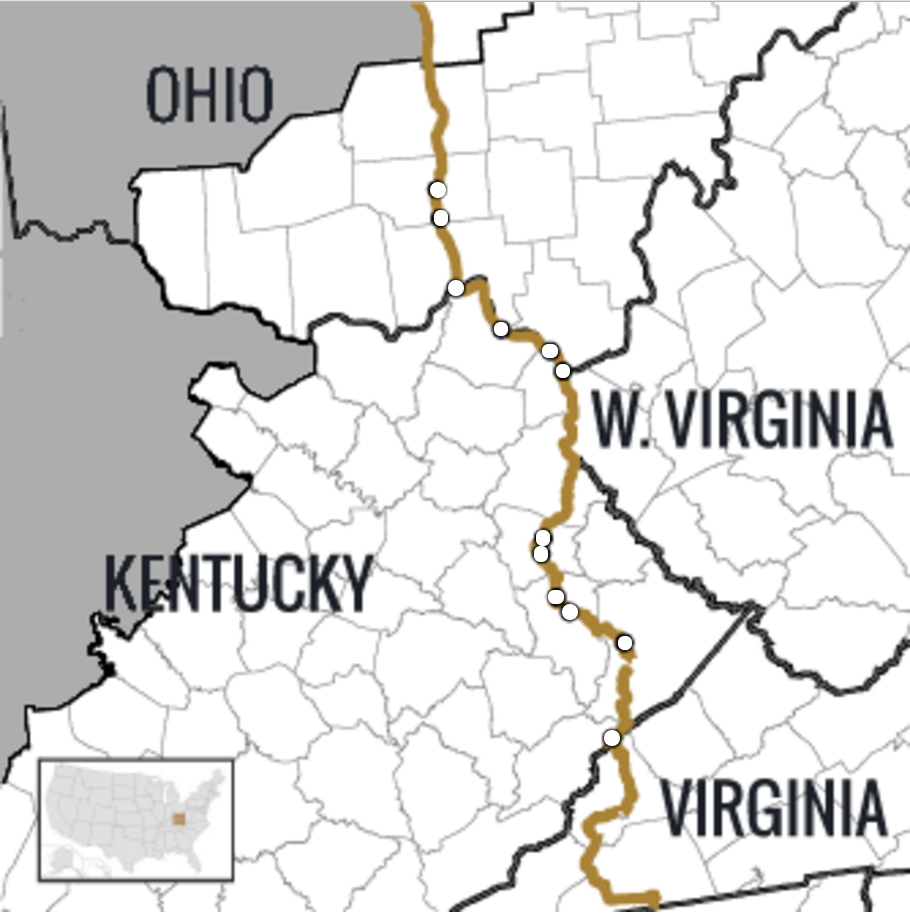
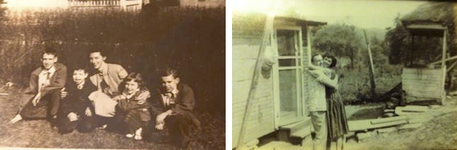
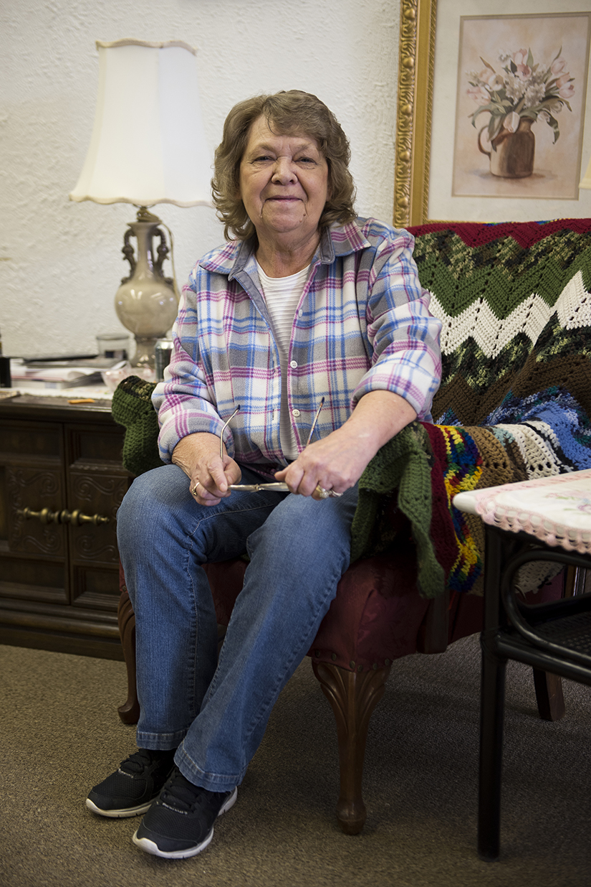
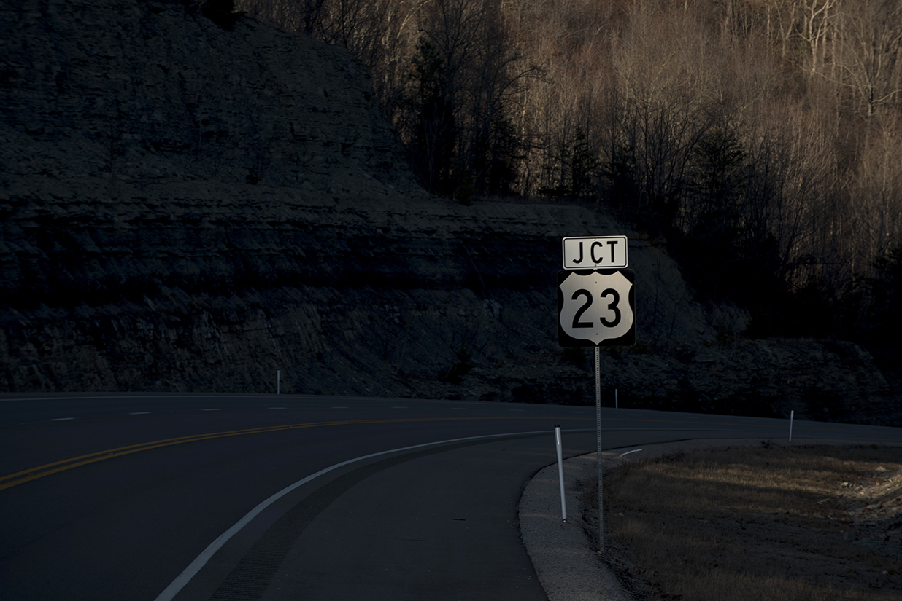
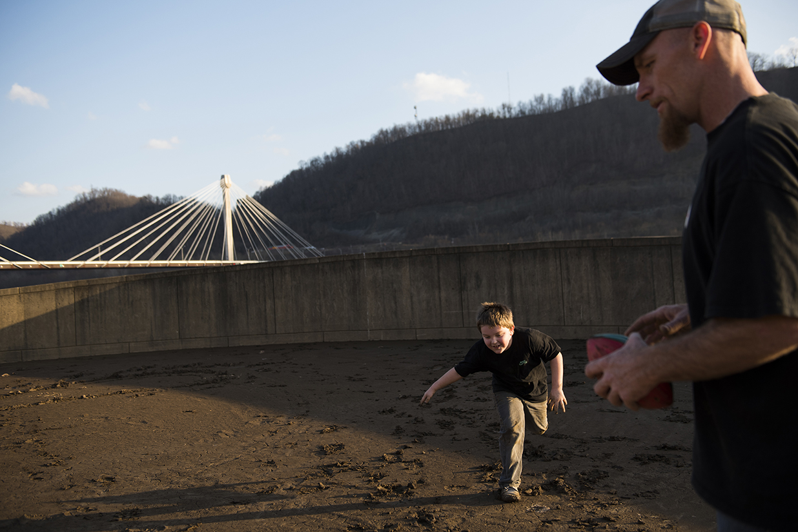
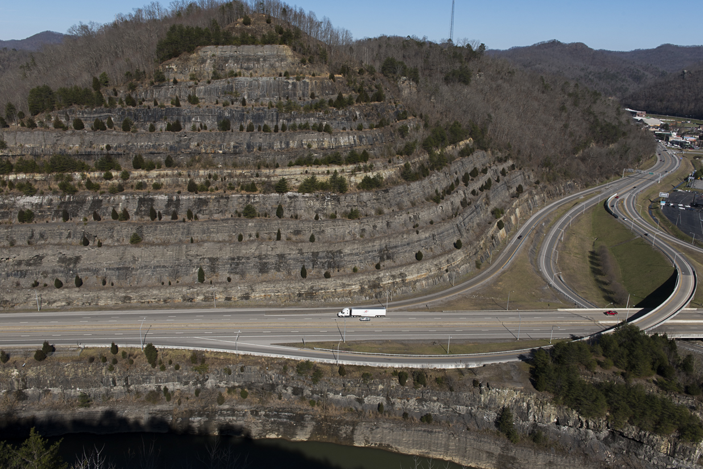
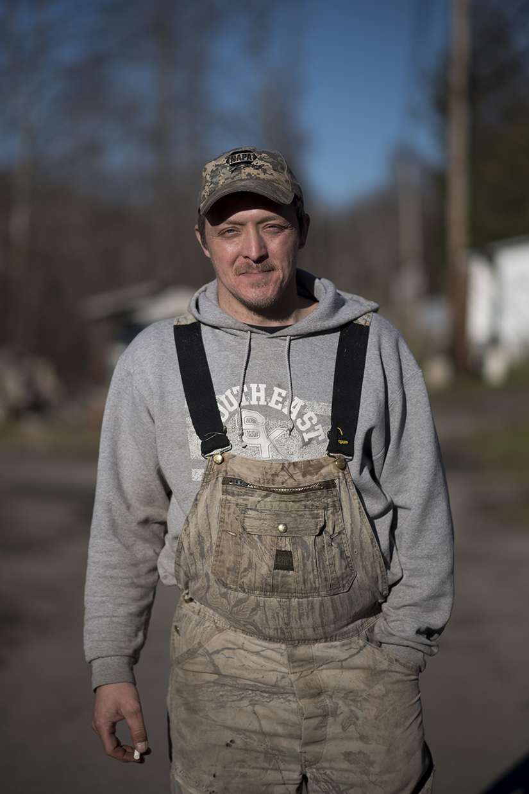
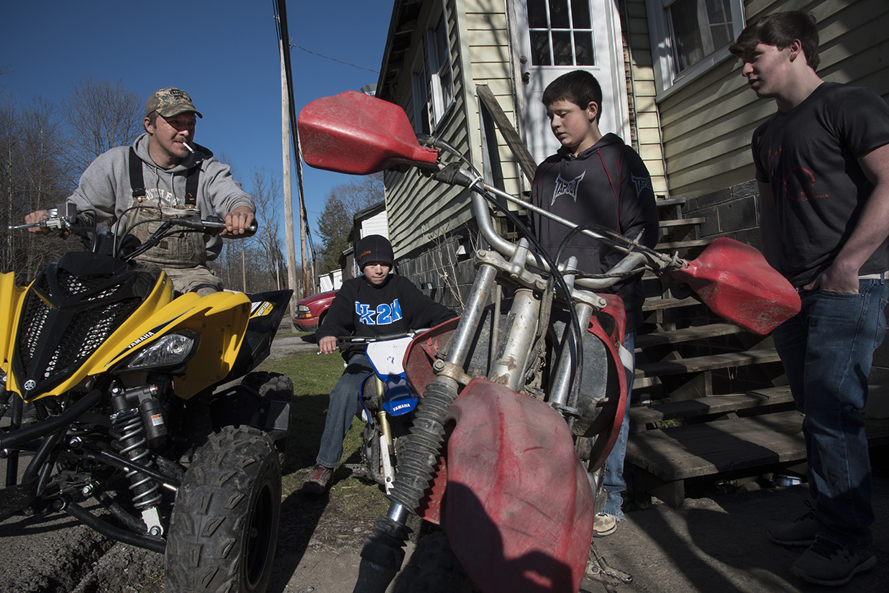
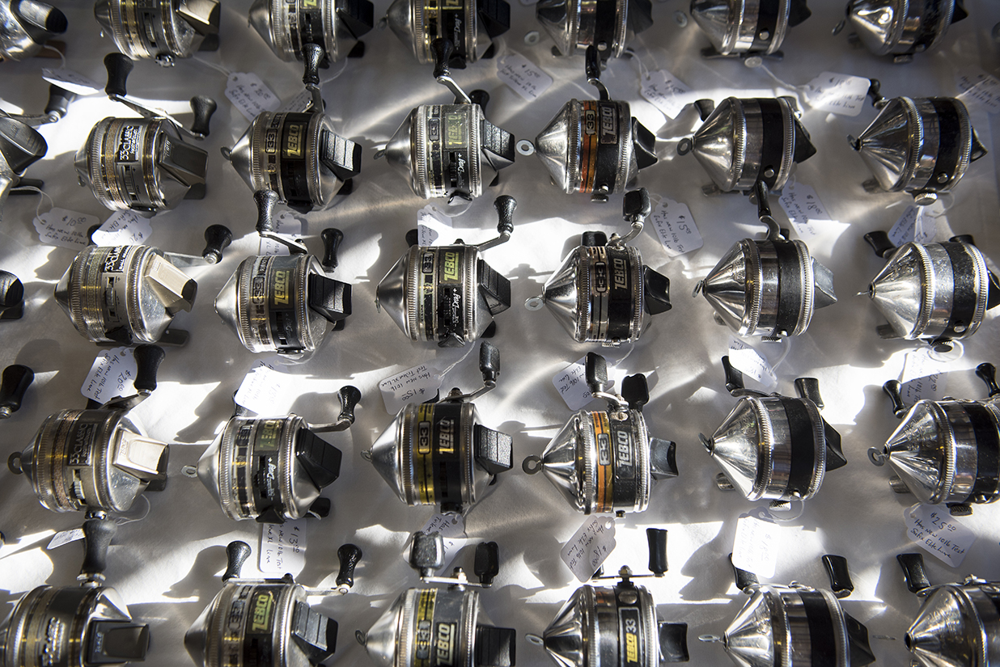
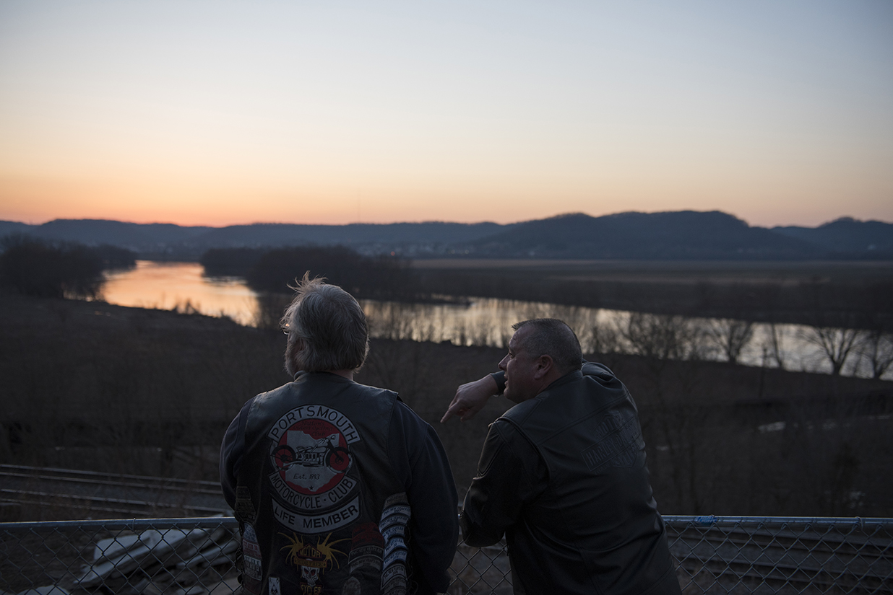

THIS BOND UNBROKEN
EMILY HARGER / Content Creator
KEITH RUTOWSKI / Content Creator
KEITH RUTOWSKI / Content Creator
INTRODUCTION
Paul Hopkins is standing on a hillside above the small community of Greasy Creek, Kentucky, peering down into the valley where he has lived 66 of his 68 years. The still brown foliage of early spring sways around him in the mid-afternoon sun. He takes in the surrounding vista, light glinting off a road slicing through the ragged mountain rock, mountains he knows as well as an old friend.
Given the way Paul speaks of those two childhood years in the 1950s, one might get the impression he had been gone for decades—such was the pull of the land and people of his birthplace. It’s a magnetizing force felt by innumerable individuals like him whose families have at some point left the hills of eastern Kentucky and southern Ohio and taken to the road to look for jobs in northern cities.
Paul’s family story is a stitch in the fabric of one of America’s largest internal migrations, a mid-20th century movement that saw three million people leave Appalachia between 1940 and 1970. Eastern Kentucky was acutely impacted in particular, losing nearly 35 percent of its population in the 1950s alone. The mass exodus, once known as the “Hillbilly Highway,” shaped and continues to shape part of the cultural identity of mountain residents.
Those who were part of the stream of migrants in the broad “Highway” became intimately familiar with their closest north-south road, and for many in this part of Appalachia, U.S. Route 23 is the one with which their lives became intertwined. While the road stretches 1,400 miles from Michigan to Florida, it’s the portion wending its way from Letcher County, Kentucky, at the Virginia border up through Scioto County in southern Ohio, that is arguably one of the most significant stretches of road in America in terms of its historical connection to the collective consciousness of a group of people.
The land and people immediately bordering this stretch of the road are known for a rich musical heritage—US 23 in eastern Kentucky is also known as the Country Music Highway—as well as a storied labor history and the indivisible bonds the people feel to this place. To trace US 23 is to view a cross section of the life of this Appalachian subregion and to begin to understand the important role migration played in it.

HISTORY OF SOUTH-NORTH MIGRATION
A long succession of Appalachian migrants predates the enormous mid-20th century phase, with some people leaving as early as the late 1800s. Over the past 100 years, migration has occurred within a cyclical push-pull system: either hardship periods have expelled people from the area or bountiful periods elsewhere drew people onward.
As the book Appalachian Odyssey: Historical Perspectives on the Great Migration explains, around the time of World War I, expanding industries in the north and the tightening of foreign immigration policy led to the recruiting of southern workers, and many were pulled up to capitalize on the opportunity. Infrastructure developed in step, with public transportation delivering some laborers from towns in eastern Kentucky directly to factories in Detroit. Later on, the Second World War took large numbers of young men, both those who enlisted and those who chose to head to the industrial cities of the Midwest, where war manufacturing hummed.


Naomi Long poses for a portrait at her son's restaurant and gift shop, Pop-Pop's Sandwich Shoppe, in Greenup, KY, on February 26, 2016.
One of the first large push periods followed on its heels in the 1950s. Small rural farms in eastern Kentucky sharply declined, the usage of oil and gas increased against coal, and the mechanization of coal mines cut into employment numbers. As Ronald Eller explains in Uneven Ground: Appalachia Since 1945, “by the end of the 1960s, one in three industrial workers in Ohio was from Appalachia.”
A great number of Appalachian workers found the success they sought in the north and were able to form new communities. But the bond between the people, the road and the region has been reinforced by the fact that migration from this area has not been strictly one-direction. Ever since the Great Depression, workers who began heading north for harvests and high production periods in manufacturing would come home during the slow periods. More common still was the experience of weekend visits. Single workers or families who lived in their city of employment would end a final weekday shift only to pack the car and make the long drive down 23. This periodic pilgrimage home is engrained in the memories of many, and the stories of bumper-to-bumper traffic on Friday evenings on 23 South are legion.

Lifetime resident of Greenup, Kentucky Joan Evans Litteral poses for a portrait in the Green County Public Library on February 22, 2016.
A CHARACTER SEARCHING FOR WORK
The days of traveling north for work are mostly over for Naomi Long, Joan Evans Litteral and others their age, but there are members of a younger generation today, like Tim Mahan, who struggle to find work and occasionally find themselves on US 23. Mahan has commuted hours back and forth to the Columbus, Ohio, area for janitorial work or to do construction. However, he is hesitant to move away and feels tied to the southern part of the state. “I’ve always talked about leaving this state. But it’s family. We’ve camped out in these hills, hunted them,” he says. “We grow in these hollers and these hills.”

Landon Mahan, 7, and his father, Tim Mahan, enjoy unseasonably warm weather in Portsmouth, Ohio, on February 20th, 2016. Behind them, the U.S. Grant Bridge spans the Ohio River, carrying U.S. 23 traffic between Portsmouth and Kentucky.

THE CREATION AND EVOLUTION OF ROUTE 23
John Whisman, founder of the economic development agency the Appalachian Regional Commission in the 1960s, once wrote, “What east Kentucky needs is one good road to join us up with the rest of the country.” The commission, and subsequently various state governors, believed that the region’s economically depressed condition was due in large part to its relative isolation. A more expansive and better-maintained system of roads, they argued, would better connect the region with the rest of the country’s interstate system that had mostly bypassed sections of Appalachia’s formidable terrain. The Appalachian Development Highway System was born in 1965 with the intent of addressing the issue.
US 23 was among the myriad Appalachian roads that received a decades-long overhaul as a result of the ADHS formation. The road’s original incarnation had been an often muddy dirt route in Ohio that expanded into a two-lane limited access route through Kentucky and beyond in the 1920s. And it was one of the first corridors the system set about updating to a four-lane highway with the help of federal money, explains Sara George of the Kentucky Transportation Cabinet.
Stages in the evolution of US 23 have involved engineering marvels. In addition to its lengthening and widening, the road has been rerouted, sometimes around or through significant barriers. In an effort to control flooding, redirect heavy truck traffic out of downtown and free up underutilized space, the Pikeville Cut-Through in Pike County, Kentucky, rerouted a bow in 23, shifted the Levisa Fork of the Big Sandy River, and ultimately moved 18,000,000 cubic yards of rock and earth. Today, George says a new hall of justice, a cinema, the health department and facilities for the medical center occupy the space. Car dealerships and other businesses line a segment of the new road here.
A report in the Journal of the American Planning Association covering the years 1969—1991 concluded that, “More jobs have been created and more economic growth has been stimulated in counties with Appalachian development highways than in counties without them." However, road improvement and expansion alone has not made the resounding economic impact that was hoped for in eastern Kentucky.
More than 90 percent of the 400-plus total miles of the ADHS system in Kentucky have now been constructed. Remote areas have been opened up to the outside world, travel has become safer, and commute times considerably shortened, but there have been side effects as well. According to some residents, the rerouting away from the hearts of smaller towns such as Greenup and Louisa, relieved traffic congestion but also resulted in businesses creeping out to its new edges and the subsequent drying up of those that once existed downtown. Poverty in a considerable portion of eastern Kentucky remains above the national average and despite noticeable progress in certain areas, out-migration continues.


Lifetime resident of Greenup, Kentucky Joan Evans Litteral poses for a portrait in the Green County Public Library on February 22, 2016.
COAL DOWNTURNS AND THE REVERBERATIONS
Truck driver Mike Clevenger sits and talks with Amos Nolen inside S &s; K Fuels service station on US 23 in Catlettsburg, Kentucky, on a cold winter night. Before Nolen—the station’s manager—heads out to fill Clevenger’s truck, the topic turns to the state of business and solemnity hangs in the room. Despite the transportation improvements from the ADHS, the primary industry once counted on to fuel economic growth along these roads remains caught in the gears of the boom-bust cycle. The two men’s livelihoods and the northward migration periods experienced here continue to be largely defined by fluctuations within the coal industry.
According to a 2014 state-wide coal industry assessment by the Kentucky Energy and Environment Cabinet, “Coal mine layoffs have been concentrated in eastern Kentucky where on-site employment has fallen by approximately 7,000 jobs, or 38%, since mid-year 2011 to 7,436 by the end of 2013.” The Cabinet reported that coal employment in this part of the state declined even further this past year, averaging 5,897 for 2015. Add to this the fact that eastern Kentucky’s major coal seams are nearing exhaustion and the costs for extracting from them are prohibitive, and it appears the impetus for many who are involved in the coal industry to leave the region will remain into the foreseeable future.


FIRST PHOTO: Coy Riley of Thornton, Kentucky poses for a portrait outside of his friend Billy Wells' home in Jenkins on February 27, 2016. Coal mining goes back generations in Coy's family until he lost his job in the mines. SECOND PHOTO: Coy Riley, far left, talks with his son Cameron Riley, 15, far right; Kannon Wells, 10, middle left; and Cameron Wells, 12, middle right; before spending the afternoon riding ATVs outside of the Wells' home in Jenkins on February 27, 2016.
SOME HAVE MANAGED TO FIND SUCCESS
The memory or prospect of leaving lingers for residents, but there are also those living along US 23 who have managed to weather the cyclical economic storms and have never had to leave their beloved homes. A few, like barber Paul Daniel, have benefitted in part because of the visibility of being located along the side of the road. But it is a synthesis of hard work and loyal customers that seem to have had an equally great impact.

Paul Daniel poses for a portrait outside of his barbershop alongside U.S. Route 23 in Nippa, KY, on February 26, 2016.
Camaraderie is found between a barber and his long-time patron. It’s found between vendors at a roadside market where they sell everything from trading cards to tabloids, brushes to bows, leather and metal goods. It’s found at a service station, where an owner and his friends peddle stories, reminiscing about the old days and the pride of having kept a business alive despite the odds.


FIRST PHOTO: Workclothes for sale at the Bull Creek Flea Market along U.S. Route 23 near Prestonburg, KY, on February 28, 2016. SECOND PHOTO: Mongrammed bows for sale at the Bull Creek Flea Market along U.S. Route 23 near Prestonburg, KY, on February 28, 2016. THIRD PHOTO: Fishing reels for sale at the Bull Creek Flea Market along U.S. Route 23 near Prestonburg, KY, on February 28, 2016. FOURTH PHOTO: Wire brushes for sale at the Bull Creek Flea Market along U.S. Route 23 near Prestonburg, Kentucky on February 28, 2016.
COMMUNITY
A migration anomaly for the area occurred in the 1970s. For one decade, the mid-20th century population slide was halted and temporarily reversed, with substantially more in-migration than out. A study of the period found that the deluge comprised a substantial number of individuals returning home and their reasons didn’t stem as often from improved economic conditions as it did the yearning for the family, friends and community they had there.
Tim Brumfield feels he knows the deep-seated origin of this bond that keeps people here or pulls them back home. A gravel-voiced man who appreciates old, “pretty stuff” and sells it in his store along US 23, Brumfield grew up in southern Ohio. When he was young, his family struggled to make ends meet, as did most other people he knew in the area, but they found a way to survive. To Brumfield, this is the common flame burning bright to all those who originated here.
LOVE OF PLACE
While there is a shared melancholy and hardened resolve, there is also great joy expressed through the culture surrounding US 23. From sporting events, to dances, to motorcycle clubs, the zeal for life is found all along the edges of highway’s path.

Two motorcycle enthusiasts watch the sunset at the Stag Bar on U.S. Route 23 in Portsmouth, Ohio, on February 20th, 2016.
CONCLUSION
And so they may continue to take up with the open road, moving along in vehicles suspended between back home and everywhere else. For many of those whose circumstances lead them away, the hills, hollers and home places lying along U.S. Route 23 will remain imprinted forever on their hearts and minds.

U.S. Route 23 cuts through the mountainside right before running through the Kentucky/Virginia border on February 28, 2016.